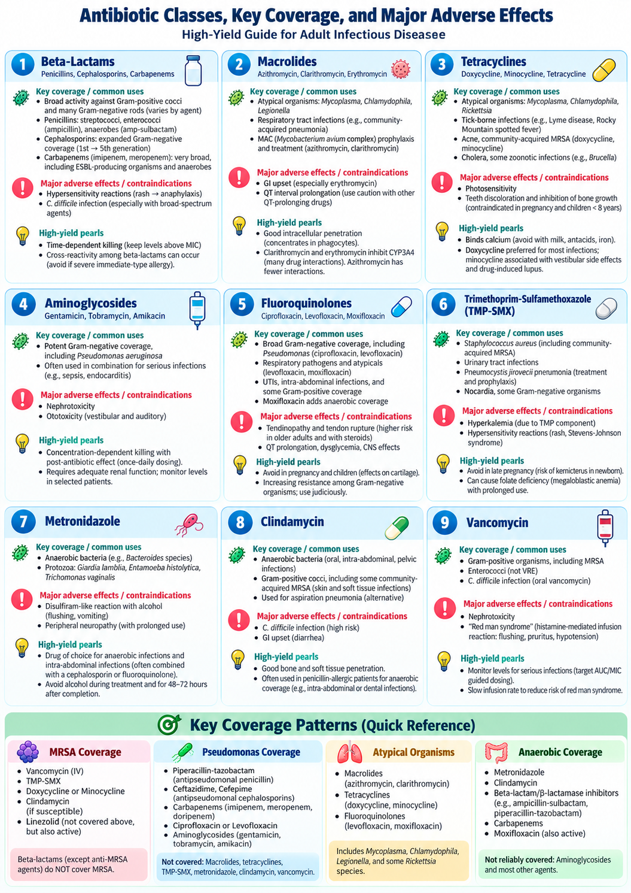
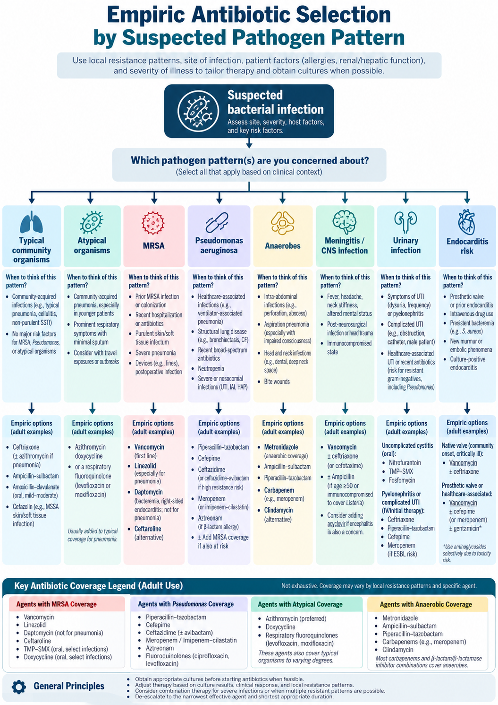
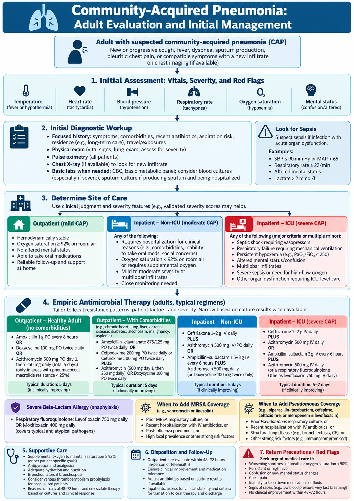
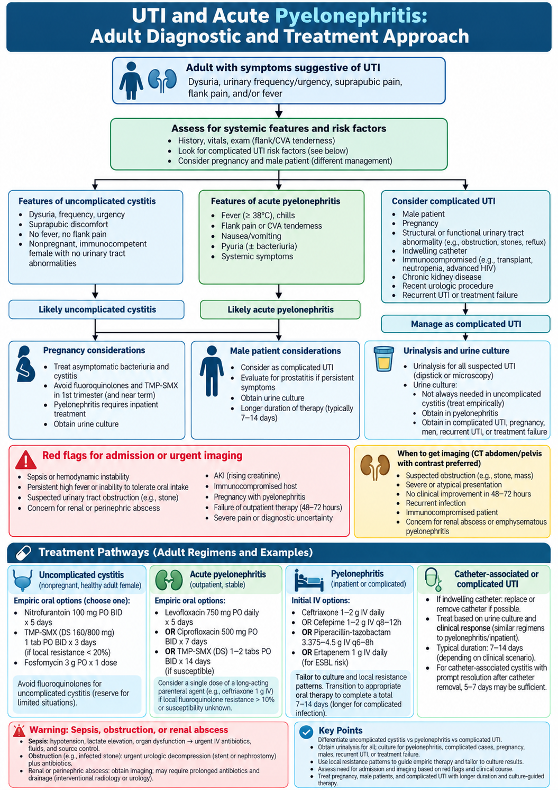
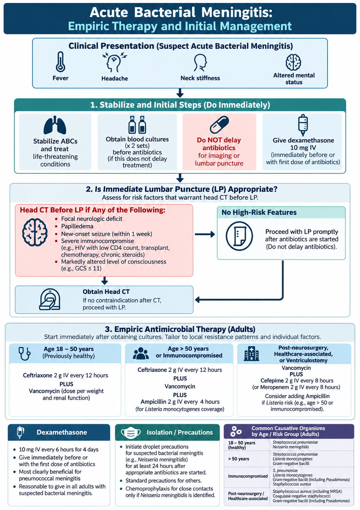
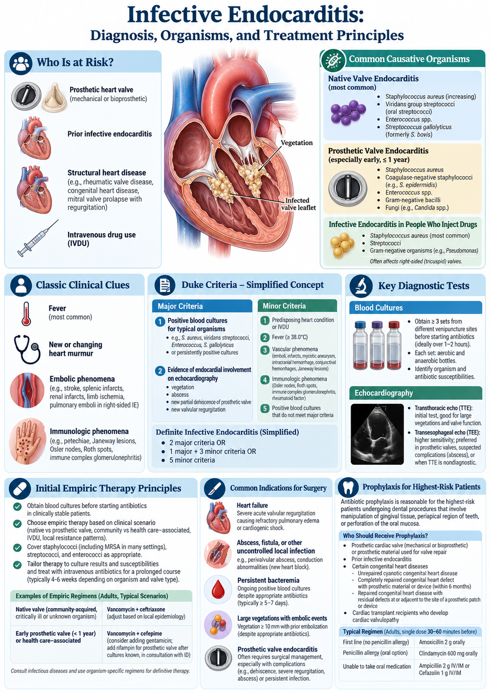

🦠 Antibiotics & Common Infections
Physician-level antimicrobial selection, coverage patterns, major toxicities, CAP, UTI/pyelonephritis, bacterial meningitis and infective endocarditis.
80 questions
1. Beta-Lactams, Macrolides, Tetracyclines & Aminoglycosides
Build the antibiotic foundation: mechanism, coverage, common uses and major toxicities.
Core framework
- Choose an antibiotic by site of infection + likely organism + severity + host factors, then narrow when microbiology is available.
- Always check allergy history, renal/hepatic function, pregnancy, QT risk, drug interactions, prior cultures, recent antibiotic exposure, and local antibiogram.
- 🔥 Source control matters: antibiotics alone do not cure an undrained abscess, infected obstructed system, infected device, or necrotic focus.
Beta-lactams
| Class | High-yield coverage/use | Major issue |
|---|---|---|
| Penicillins | Streptococci; ampicillin adds Enterococcus/Listeria activity; antipseudomonal penicillins such as piperacillin-tazobactam are broad | Immediate hypersensitivity; interstitial nephritis; C. difficile risk |
| Cephalosporins | Generation-dependent Gram-negative activity; ceftriaxone for CAP/meningitis; cefepime covers Pseudomonas | Cross-reactivity is low overall but assess severe immediate allergy; cefepime neurotoxicity in renal dysfunction |
| Carbapenems | Very broad Gram-negative + anaerobic activity; ESBL infections in selected severe cases | Seizure risk (especially imipenem, renal dysfunction); stewardship reserve agent |
Macrolides, tetracyclines & aminoglycosides
- Macrolides: atypical respiratory coverage. Azithromycin has fewer CYP interactions than clarithromycin/erythromycin. Watch QT prolongation.
- Doxycycline: atypicals, tick-borne disease, selected CA-MRSA skin infections. Can cause esophagitis/photosensitivity; separate from polyvalent cations.
- Aminoglycosides: potent aerobic Gram-negative activity including Pseudomonas; concentration-dependent killing. Major toxicities = nephrotoxicity + ototoxicity; dose/monitor carefully.
🖼️ Antibiotic Classes, Coverage & Adverse Effects
Clinical visual for rapid review.
Common wrong-answer traps
- “Broadest” is not automatically best — match the likely pathogen and severity.
- Atypical coverage is not provided by most beta-lactams.
- Aminoglycosides do not cover anaerobes.
- Daptomycin is inactivated by pulmonary surfactant → not for pneumonia.
Write only your own summary/rule — not copied QBank text.
2. Fluoroquinolones, TMP-SMX, Metronidazole, Clindamycin & Vancomycin
Recognize the second-line classes that repeatedly appear in clinical vignettes.
Fluoroquinolones
- Ciprofloxacin: strongest classic Pseudomonas activity; weak pneumococcal activity compared with respiratory fluoroquinolones.
- Levofloxacin/moxifloxacin: respiratory activity; moxifloxacin is not preferred for urinary infection because urinary concentrations are inadequate.
- Major risks: tendinopathy/tendon rupture, QT prolongation, dysglycemia, CNS effects, peripheral neuropathy, C. difficile; use selectively.
TMP-SMX
- Useful for susceptible urinary pathogens, CA-MRSA skin infection, and Pneumocystis jirovecii treatment/prophylaxis.
- Important adverse effects: hyperkalemia, creatinine rise from trimethoprim tubular secretion, AKI/interstitial nephritis, marrow suppression, rash/SJS-TEN, drug interactions.
- Avoid/individualize in pregnancy depending on gestational stage and indication.
Metronidazole & clindamycin
- Metronidazole: excellent anaerobic coverage below the diaphragm and protozoal activity; no aerobic coverage.
- Clindamycin: Gram-positive + anaerobic activity in selected settings; high C. difficile risk.
- Do not choose clindamycin simply because “anaerobes” are mentioned; site and resistance patterns matter.
Vancomycin
- Covers serious Gram-positive infections including MRSA.
- IV vancomycin for systemic infection; oral vancomycin is used for C. difficile because oral absorption is minimal.
- Monitor exposure/renal function according to institutional protocol; nephrotoxicity risk rises with excessive exposure and other nephrotoxins.
- Infusion reaction (“red man”) is rate-related histamine release, not IgE allergy.
Write only your own summary/rule — not copied QBank text.
3. MRSA, Pseudomonas, Atypical & Anaerobic Coverage
Match the pathogen pattern to the right antimicrobial family without reflexively over-broadening.
Coverage patterns you should recognize
| Pattern | Think of | Typical adult options (context dependent) |
|---|---|---|
| MRSA | Prior MRSA, purulent SSTI, severe post-influenza pneumonia, invasive device infection | Vancomycin; linezolid for pneumonia; daptomycin for bacteremia/right-sided IE but not pneumonia |
| Pseudomonas | Structural lung disease, prior isolation, recent broad-spectrum antibiotics, healthcare exposure | Piperacillin-tazobactam, cefepime, ceftazidime, meropenem/imipenem; selection guided by site/antibiogram |
| Atypicals | CAP: Mycoplasma, Chlamydophila, Legionella | Azithromycin, doxycycline, respiratory fluoroquinolone |
| Anaerobes | Intra-abdominal infection, aspiration with abscess/empyema, dental/deep neck infection | Metronidazole plus companion drug, beta-lactam/beta-lactamase inhibitor, carbapenem, selected clindamycin use |
🖼️ Empiric Antibiotic Selection by Pathogen Pattern
Use as a pattern-recognition map; final therapy depends on infection site, cultures and local resistance.
🔥 Must memorize
- Vancomycin ≠ Gram-negative coverage.
- Metronidazole ≠ aerobic coverage.
- Macrolide/doxycycline = atypical coverage.
- Cefepime/piperacillin-tazobactam = common antipseudomonal options.
- Linezolid can cover MRSA pneumonia; daptomycin cannot.
Write only your own summary/rule — not copied QBank text.
4. Major Adverse Effects & Contraindications
Use classic toxicity clues to eliminate wrong answers and prescribe more safely.
High-yield adverse-effect map
| Drug/class | Classic adverse effect / contraindication |
|---|---|
| Penicillins/cephalosporins | Allergy; interstitial nephritis; C. difficile risk |
| Macrolides | QT prolongation; GI upset; CYP interactions (clarithromycin/erythromycin) |
| Tetracyclines | Photosensitivity, esophagitis, teeth/bone effects; avoid routine use in pregnancy |
| Aminoglycosides | Nephrotoxicity, ototoxicity, neuromuscular blockade |
| Fluoroquinolones | Tendinopathy, neuropathy, QT, dysglycemia, CNS effects; avoid unnecessary use |
| TMP-SMX | Hyperkalemia, marrow suppression, rash/SJS-TEN, renal effects |
| Metronidazole | GI upset, metallic taste, neuropathy with prolonged exposure |
| Clindamycin | C. difficile colitis |
| Vancomycin | Nephrotoxicity; infusion reaction if given too rapidly |
Renal-dose pearls
- Many antimicrobials require adjustment in kidney dysfunction.
- Aminoglycosides and vancomycin need especially careful renal dosing/monitoring.
- Nitrofurantoin efficacy/safety depends on renal function and should not be used for pyelonephritis.
- 🔥 If kidney function changes rapidly, re-check dosing rather than relying on an old creatinine.
Write only your own summary/rule — not copied QBank text.
5. Community-Acquired Pneumonia
Determine site of care, choose empiric therapy and reassess for stability/de-escalation.
Classic presentation
- New cough ± sputum, fever, dyspnea, pleuritic pain, focal chest findings plus a new infiltrate on imaging when available.
- Assess oxygenation, hemodynamics, mental status, respiratory rate and comorbidities to determine site of care.
- Do not use procalcitonin alone to withhold initial antibiotics when bacterial CAP is clinically/radiographically suspected.
Adult empiric therapy — high-yield framework
| Setting | Typical options |
|---|---|
| Outpatient, no major comorbidity | Amoxicillin 1 g PO three times daily OR doxycycline 100 mg PO twice daily; macrolide monotherapy only where pneumococcal resistance is <25% |
| Outpatient with comorbidities | Amoxicillin-clavulanate (or cephalosporin) + macrolide/doxycycline OR respiratory fluoroquinolone |
| Inpatient non-severe | Beta-lactam (e.g., ceftriaxone) + macrolide OR respiratory fluoroquinolone |
| Severe CAP | Beta-lactam + macrolide or respiratory fluoroquinolone; add MRSA/Pseudomonas coverage only with validated risk factors |
Duration & reassessment
- Treat until clinical stability and for at least 5 days in most adults.
- Reassess at 48–72 h; broaden only when evidence supports it, and de-escalate when cultures/clinical response allow.
- 🔥 Prior respiratory isolation of MRSA/Pseudomonas and recent hospitalization with IV antibiotics are important resistance clues.
🖼️ Community-Acquired Pneumonia: Evaluation & Initial Management
Clinical visual for rapid review.
Write only your own summary/rule — not copied QBank text.
6. UTI & Acute Pyelonephritis
Distinguish bladder-confined infection from pyelonephritis/cUTI and recognize when source control is urgent.
2025 IDSA classification update
- Uncomplicated UTI: infection confined to the bladder without fever/systemic illness, flank pain, or CVA tenderness. It may occur in women or men.
- Complicated UTI: infection extending beyond the bladder — including pyelonephritis, febrile/bacteremic UTI, catheter-associated UTI — or other scenarios specified by the guideline.
- This differs from older teaching that automatically classified all male UTIs as complicated.
Uncomplicated cystitis — common options
- Nitrofurantoin 100 mg PO twice daily × 5 days.
- TMP-SMX DS PO twice daily × 3 days when local resistance/susceptibility is appropriate.
- Fosfomycin 3 g PO once is an option for selected uncomplicated cystitis.
- 🔥 Nitrofurantoin and fosfomycin are not appropriate for pyelonephritis because tissue penetration is inadequate.
Pyelonephritis / cUTI principles
- Obtain urine culture and tailor therapy.
- Empiric choice should be guided by severity (especially sepsis), prior urine cultures, resistant-organism risk, recent fluoroquinolone exposure, allergies/interactions and local antibiogram.
- Consider obstruction, abscess, pregnancy, immunocompromise and inability to take PO when deciding admission/imaging.
- In infected obstruction, antibiotics alone are insufficient → urgent urologic drainage/source control.
🖼️ UTI & Acute Pyelonephritis: Diagnostic and Treatment Approach
Note: written notes follow the updated 2025 IDSA bladder-confined vs beyond-bladder classification.
Write only your own summary/rule — not copied QBank text.
7. Acute Bacterial Meningitis
Treat first, then complete imaging/LP safely without delaying life-saving antibiotics.
When to suspect bacterial meningitis
- Fever, headache, neck stiffness and altered mental status are classic; not all are present.
- Seizure, focal deficit, petechial/purpuric rash, shock, or rapidly progressive encephalopathy are red flags.
- 🔥 Do not delay antibiotics for CT or lumbar puncture when bacterial meningitis is strongly suspected.
Immediate adult management
- Stabilize ABCs; obtain blood cultures promptly if this does not delay therapy.
- Give dexamethasone
10 mg IVimmediately before or with the first antibiotic dose when acute bacterial meningitis is suspected; benefit is clearest in pneumococcal meningitis. - Age 18–50: ceftriaxone + vancomycin is a common empiric regimen.
- Age >50 or immunocompromised: add ampicillin for Listeria coverage.
- Post-neurosurgery/healthcare-associated: antipseudomonal beta-lactam + vancomycin; follow local protocol.
CT before LP? High-yield clues
- Focal neurologic deficit
- Papilledema
- New-onset seizure
- Markedly depressed consciousness
- Severe immunocompromise / concern for mass lesion
- If CT is needed, draw cultures and start therapy first — do not wait.
🖼️ Acute Bacterial Meningitis: Empiric Therapy & Initial Management
Clinical visual for rapid review.
Write only your own summary/rule — not copied QBank text.
8. Infective Endocarditis
Recognize the syndrome, obtain cultures, use echocardiography correctly and identify surgical disease.
Classic diagnostic pattern
- Persistent fever ± new/changing murmur, embolic phenomena, vascular/immunologic findings, or unexplained bacteremia.
- High-risk settings: prosthetic valve/material, prior IE, intracardiac device, congenital heart disease, injection drug use, persistent S. aureus bacteremia.
- Obtain multiple blood-culture sets before antibiotics if the patient is stable enough.
Echo strategy
- TTE is usually first-line.
- TEE has greater sensitivity and is preferred/required when prosthetic material, intracardiac device, abscess/complication, or high clinical suspicion persists despite nondiagnostic TTE.
- Repeat imaging may be needed when early studies are negative but suspicion remains high.
Treatment principles
- Empiric therapy depends on native vs prosthetic valve, healthcare exposure, severity, and local epidemiology; then narrow to organism and susceptibility.
- Typical treatment courses are prolonged IV therapy, commonly 4–6 weeks depending on organism/valve scenario.
- Early Endocarditis Team / infectious disease + cardiology/cardiac surgery involvement improves complex decision-making.
Surgery — major indications
- Heart failure from severe valve dysfunction.
- Uncontrolled infection: abscess, fistula, persistent bacteremia, difficult organisms.
- Prevention of embolism in selected patients with large vegetations/embolic events.
- Prosthetic-valve or device-related infection may require surgical/device management.
Prophylaxis pearl
- Antibiotic prophylaxis is reserved for highest-risk cardiac patients undergoing selected dental procedures.
- Current AHA guidance does not recommend clindamycin as a dental-prophylaxis alternative because of adverse-event concerns; use guideline-listed alternatives based on allergy profile.
🖼️ Infective Endocarditis: Diagnosis, Organisms & Treatment Principles
Use the notes above for current prophylaxis details; some older teaching materials list clindamycin, which current AHA guidance no longer recommends.
Write only your own summary/rule — not copied QBank text.
⚡ Day 9 Rapid Review
📈 Day 9 Progress
Your original-practice scores and external QBank block tracker are stored privately in this browser.